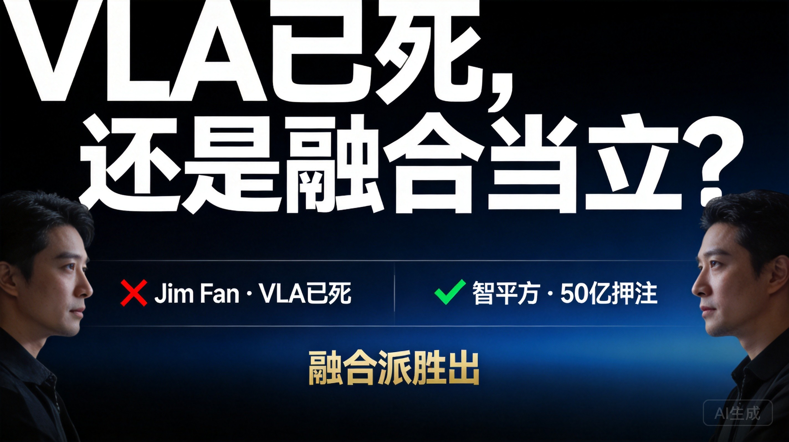

2026年上半年，具身智能领域吵了一场路线架。导火索是NVIDIA机器人负责人Jim Fan的一次公开表态，原话大意是：具身AI的下一个前沿不是更多遥操数据，也不是更大的VLA模型，而是World Action Models（WAM）。
随后，2月，Jim Fan团队挂出论文DreamZero（arXiv 2602.15922），14B参数的WAM模型。38倍推理加速后跑到7Hz实时控制，零样本泛化能力比当时最强的VLA（GR00T N1.6、π0.5）提升超过2倍。
然后就是智平方——这家深圳公司完成了近50亿元融资，估值冲到200亿元，走的是"类脑VLA"路线。创始人郭彦东在夏季达沃斯上说了一句很有意思的话："世界模型不是VLA的竞争路线，是VLA体系中的核心组成部分。"
一个说VLA已死，一个拿50亿说VLA还能活。这矛盾吗？往下看就明白了。
VLA（Vision-Language-Action），视觉-语言-动作模型。把摄像头看到的画面和语言指令，直接翻译成机器人的关节动作。骨干网络来自CLIP、ViT这些在静态图片上训练出来的视觉模型，天生懂语义——你说"把可乐罐移到Taylor Swift海报旁边"，它能找到目标位置。但如果你让它"解开鞋带"，而训练数据里从没见过这个动作，它就傻了。
VLA像是一个博览群书但没怎么干过活的实习生，理论知识满分，动手能力需要手把手教。
世界模型（World Model），核心能力是"想象未来"。给它当前画面和一个动作，它能预测接下来世界会变成什么样。骨干是视频预测模型，天然理解物理因果——物体掉下去会碎、水倒满了会溢。但它只会"想"不会"做"，预测出的未来画面不能直接变成关节指令。
WAM（World Action Model），Jim Fan团队主推的新范式。做法是把视频预测模型当骨干，同时预测未来画面和动作。相当于给实习生配了一个"脑内模拟器"——先想象自己做一遍，确认没问题了再动手。DreamZero就是这个思路的产物。
VLA的短板很明确。它的视觉骨干是在静态图文数据上预训练的，天然缺乏对物理动态的理解。用mimic-video论文（arXiv 2512.15692）的说法：视觉-语言预训练能有效捕捉语义先验，但对物理因果关系视而不见。
这导致VLA需要海量专家数据来弥补物理直觉的缺失。模型要"从零学物理"，数据效率极低。
世界模型这边也有问题。它能预测"如果我向左推杯子，杯子会滑到哪里"，但预测出画面后怎么变成精确的关节角度？这一步的逆动力学映射仍然需要大量数据。而且视频生成本身计算量大，要做到实时控制非常困难——DreamZero花了38倍加速才从5.7秒压到实时。
| 维度 | VLA 的长板 | WAM 的长板 |
|---|---|---|
| 语义理解 | ✅ 强，理解自然语言指令 | ❌ 弱，主要处理视觉动态 |
| 物理直觉 | ❌ 弱，需从零学物理 | ✅ 强，理解因果动态 |
| 数据效率 | ❌ 低，需海量专家数据 | ✅ 高，样本效率高10倍 |
| 部署推理 | ✅ 简单，推理速度快 | ❌ 复杂，需38倍加速才实时 |
| 泛化场景 | ✅ 工业场景已有量产 | ✅ 未见环境泛化更好 |
来自Mimic Robotics、微软苏黎世、ETH和Berkeley的联合团队。核心贡献是提出Video-Action Model（VAM），在模拟基准测试中给出了两组硬数据：
| 指标 | 数值 | 说明 |
|---|---|---|
| 样本效率 | 10× | VAM比VLA样本效率高10倍 |
| 收敛速度 | 2× | VAM收敛速度比VLA快2倍 |
更极端的数据：只保留1条专家轨迹，VAM就能解决77%的模拟任务。这在VLA框架下几乎不可想象。
这篇论文的意义在于——它是首次在相同硬件、相同数据、相同任务协议下对比WAM和VLA。之前的对比都是各说各话，用的机器人不一样，训练数据不一样，评估标准也不一样，根本没法公平比较。DSWAM基于DeMaVLA柔性操作基准，搭建了一个控制实验。
| 任务类型 | WAM表现 | VLA表现 |
|---|---|---|
| 接触丰富任务（擦拭、扭转、精密插入） | ✅ 胜出 | 明显弱于WAM |
| 简单抓取任务（pick-and-place） | 持平 | 持平 |
| 多步骤复杂任务（加VLM规划器后） | 差距缩小 | 差距缩小 |
| 折叠任务（DeMaVLA基准） | 成功率96.3%，用时1'44" | 成功率92.5%，用时2'18" |
DSWAM的架构设计也值得注意——它借鉴了Kahneman的系统1/系统2框架。System 1是WAM执行器，作为默认控制路径，直接输出动作；System 2是一个视觉-语言规划器，只在任务需要分解时才激活。训练时用视频预测做辅助监督，推理时不生成视频、直接出动作，保证了实时性。
智平方2023年成立于深圳机器人谷，走的是端到端VLA路线。但从2025年11月开始，它做了一件行业里没人做的事——把世界模型融进VLA。
| 时间 | 事件 |
|---|---|
| 2025年11月 | 发布Video2Act，融合世界模型的VLA，实现"先预测、后执行" |
| 2026年4月 | 发布NeuroVLA类脑模型，"皮层-小脑-脊髓"三层架构 |
| 2026年6月 | 完成近50亿元融资，估值超200亿 |
NeuroVLA的核心设计借鉴人脑进化分工：
皮层（语义规划）：用Qwen-VL做语义理解和任务规划，只管"看明白场景、听懂指令"，不参与运动细节。
小脑（动态调制）：独立的高频自适应控制器，每秒数百次读力传感器。实验数据显示机械臂运动抖动降低75%以上。
脊髓（反射执行）：部署在FPGA上，用脉冲神经网络。碰撞后20毫秒内触发撤退反射，完全绕过上层。功耗仅0.4W——一部手机播放视频都比它费电。
碰撞恢复测试中，传统VLA全军覆没，NeuroVLA成功率54.8%。这个数字看起来不高，但对照组是零，差距本身就是信号。
郭彦东的判断其实跟DSWAM论文的设计思路高度一致：VLA管行动，世界模型管预测，分层架构管控制效率。区别在于他把这个逻辑直接做成了产品，而学术界还在论文里验证可行性。
如果你关注的是落地，这里有一个比较清晰的分工逻辑：
| 场景 | 推荐路线 | 原因 |
|---|---|---|
| 工业场景（任务明确、数据充足、环境结构化） | VLA更成熟 | 部署简单、推理快、已有量产验证 |
| 开放环境（家庭服务、非结构化任务） | WAM/融合架构优势更大 | 泛化能力强、需要理解物理因果 |
| 自动驾驶 | VLA + 世界模型双支柱 | 小鹏已量产验证，碰撞率降16.2% |
小鹏在CVPR 2026上的展示很有说服力。他们把世界模型（X-Mind）嵌入VLA架构，在统一token空间内联合预测未来画面和驾驶动作。实测碰撞率相对下降16.2%，安全指标提升9.1%。第二代VLA系统2026年3月量产推送，首月用户辅助驾驶里程占比就突破了50%。
小鹏研发团队的说法很精确：VLA由驾驶行为监督，解决"如何行动"；世界模型由下一帧预测自监督，教授动力学与因果，解决"行动之后世界会怎么变化"。两者是同一基座模型在不同训练信号下的两个侧面，不是竞争关系。
另一个值得关注的方向是触觉。TouchWorld论文（arXiv 2607.07287）证明了一个事实：在接触丰富的灵巧操作任务中，纯视觉路线有明显天花板。Pi-0.5和GR00T N1.7这类顶级VLA在接触密集任务上成功率不到40%，而TouchWorld达到65%。TouchWorld的设计思路跟NeuroVLA异曲同工——把高频触觉反射和慢速语义规划解耦到不同层级。
第一，"VLA已死"是标题党，"纯VLA不够"是真问题。Jim Fan的论文揭示的是VLA架构在物理理解上的结构性缺陷，不是VLA的死刑判决书。DSWAM的对比实验证明，在简单抓取任务上两者打平，VLA在语义泛化上仍有优势。
第二，WAM的真正价值在训练阶段，而非推理阶段。DSWAM和Fast-WAM论文都在提示同一件事：视频预测的主要价值在于训练时提供更好的世界表征，推理时不一定需要生成视频。训练时学物理，推理时出动作——这才是WAM的核心逻辑。
第三，融合已经是行业共识，竞争焦点在转移动作效率。小鹏VLA+世界模型量产落地、智平方"皮层-小脑-脊髓"做进产品、DSWAM的System 1/System 2双系统设计——不同玩家给出的答案形式不同，但底层逻辑一致：语义理解和物理预测必须共存。
第四，下一个竞争焦点是"从能预测到能行动"。世界模型的预测能力已经被反复验证，但预测出未来画面后如何高效转化为精确动作，这一步的工程化程度决定了谁能先跑通家庭场景。智平方的脊髓层、TouchWorld的触觉反射层，都是在解决这最后一公里。
说白了，这场争论的本质不是技术选型，是对"通用机器人到底需要什么能力"这个根本问题的回答。答案是：它既需要理解"这是什么"（语义），也需要理解"这会怎样"（物理），还需要在毫秒级别"做出反应"（反射）。三者缺一不可，而目前没有任何单一架构能同时做好这三件事。
融合不是妥协，是物理世界的真实要求。